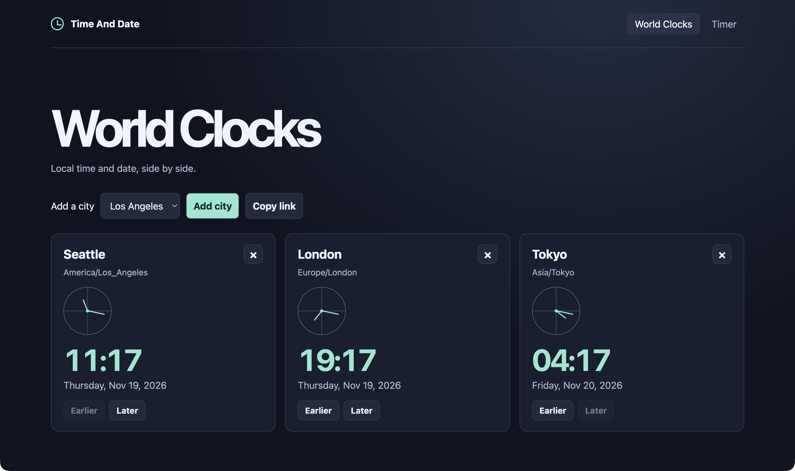
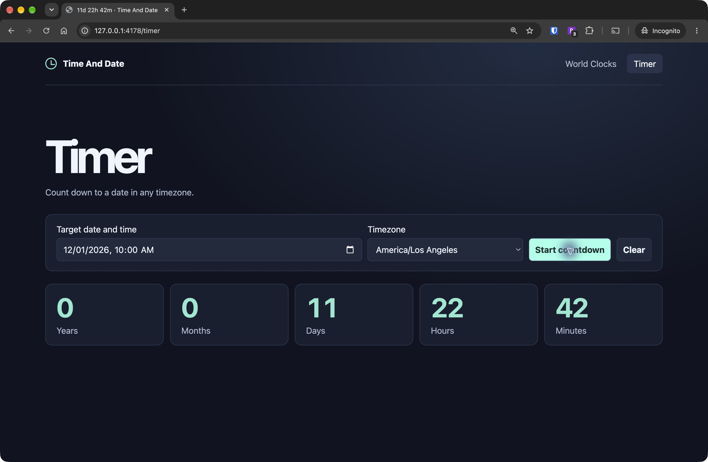
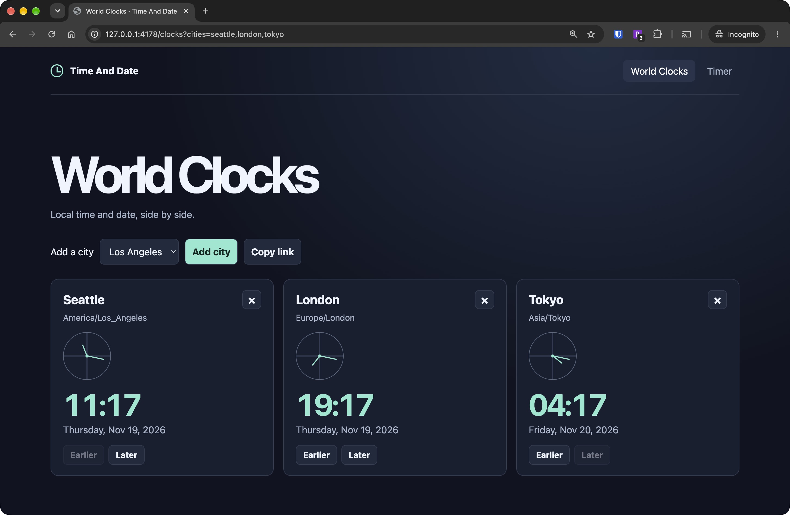
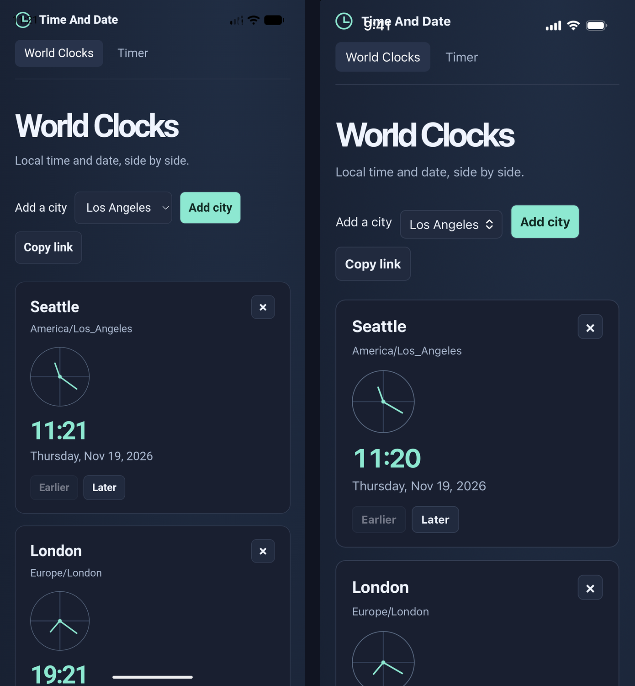

I wanted to learn how to build a single-page app that I could also package for Android and iOS. Time And Date was my test project. I built the browser version first, then used Capacitor to put that same code in both mobile projects.
I chose two features with different storage needs. A world clock board is handy to share. A countdown is something I want to reopen later on the same device.
Two tools in one single-page application
World Clocks shows several cities on the same board. I can add, remove, and reorder cities, and see both the local time and date. A board can show different calendar dates at the same instant. On the web, I can share a direct link such as /clocks?cities=seattle,london,tokyo. Opening that link reconstructs the board in the same order.

Timer counts down to a date and time in a selected timezone. It displays the remaining years, months, days, hours, and minutes and puts a compact countdown in the browser tab title. I can read the countdown in the tab strip while I’m on another tab, though browsers may slow down updates in the background. The timer stores the target and recalculates from the current time, so it can catch up after a tab has been idle.

Both tools live in one single-page application. Selecting World Clocks or Timer updates the URL and renders the corresponding view in the browser. Each view also has a direct address, so bookmarks and incoming links continue to work. On the hosted web app, Cloudflare Workers Static Assets serves the same entry page for those navigable routes, and the app chooses which view to display. App navigation code
Keep the app’s data on the device
I chose a client-side design. The web host delivers static files. The browser runs the app, formats the clocks, calculates the countdown, and keeps the active timer in localStorage. There’s no application server, backend database, or account to set up.
The two tools use different ways to preserve state. An active timer lives in browser storage because I want it to survive a reload on that device. The selected World Clocks cities and their order live in the board URL, which is what makes the board shareable without a database. Someone who opens that link gets the same city selection. Their clock readings are calculated locally.

On mobile, the same storage API runs inside the app’s WebView, so the timer state stays in app-local storage on that device. There is no automatic sync between the web and mobile versions or across devices. Clearing site or app data removes the saved timer. That tradeoff suits a pair of utilities that can work without an account.
Package the same code for mobile
I used Capacitor to put the compiled web app inside Android and iOS projects. A web build produces the static files. Capacitor sync copies those files into the native projects, which can then be built with the Android and iOS toolchains. The navigation, timezone calculations, and timer logic stay in the shared web source.

A successful native build is only the first check. Touch targets, small screens, and resuming a countdown after the app has been in the background still need testing on the target platform. The browser-tab title is a web convenience. On mobile, the countdown is visible inside the app. Test builds include an Android debug APK, a privately signed non-debug Android APK for sideloading, and an unsigned iOS Release Simulator ZIP. Store builds use separate signing and distribution. Mobile build instructions
What this project taught me
This was small enough that I could follow the whole path from browser code to a native build. I also got to make the storage decision feature by feature. I only needed to save a timer on the device and carry the city list in a link. Neither feature called for a database.
That gave me a foundation for the next design question. Once I have one codebase that can run in multiple places, how do I test it, package it, and know exactly what I shipped? The CI/CD design article describes how I approached that for the web release.